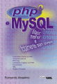

Estes são meus quinze livros que foram publicados pelas Editoras Terra e VisualBooks (infelizmente devido ao contrato dos mesmos não posso disponibilizá-los), alguns só serão encontrados em bibliotecas ou sebos, outros podem ser encontrados em várias livrarias. Cada um possui uma história que só o autor pode contar:
|
Delphi 2.0 – Desvendando o Caminho das Pedras, lançamento da Editora Terra, finalmente um livro de Delphi desenvolvido buscando o aprendizado do ambiente seguindo a construção de sistemas. Com a mesma ideia do livro do Prof. Vidal – Clipper 87, tentei fazê-lo o mais parecido possível, acredito que as poucas cópias existentes só mesmo para colecionadores. A ideia surgiu após um curso e possuía uma apostila bem consistente, desta forma, entreguei-a para a editora sem cobrar quaisquer direitos, só queria que meu nome estivesse na capa. Coisas do destino, meu nome aparece dentro do livro. Considero uma boa experiência. |
|
Delphi 4.0 & Access: O melhor de dois mundos, lançamento da Editora Visual Books – foi um aprimoramento do meu primeiro livro, neste coloquei o exemplo de 10 sistemas em 31 capítulos, demorei quatro anos para escrevê-lo e fui extremamente feliz. Este livro nasceu de uma ideia enquanto participava de uma lista de Delphi, uma pessoa mandou uma mensagem perguntando se um dos “cobras” da lista não poderia lançar um curso gratuito, foi uma gargalhada geral, o pessoal só parou de rir quando falei que lançaria o curso e por 15 semanas mandei e-mails com o conteúdo. Estes e-mails foram os 15 primeiros capítulos do livro. Depois o Nilton da Visual Books, perguntou se eu queria lançar um livro, criei mais 15 capítulos para tal. Atualmente encontra-se esgotado. |
|
PHP e mySQL para Windows, lançamento da Editora Visual Books – este ocorreu em um momento de total falta de inspiração, trocando e-mails com o Nilton que me perguntou se conhecia o PHP, pois o mercado estava pendendo muito para essa linguagem. Estudei e quando fui tirar minhas férias em Caldas Novas, levei o Notebook e lá mesmo o livro nasceu nas quentes águas. De todos os livros foi o que escrevi mais rápido e acho que nunca mais consegui superar esta marca, foi a metodologia Ágil colocada ao máximo de sua prova. Atualmente encontra-se esgotado. |

Delphi & Flash: Explorando Novas Fronteiras, lançamento da Editora Visual Books – Meu livro de Delphi faltando algo, o visual dos sistemas precisava ser melhorado e o banco MS-Access desejava muito a desejar. Um excelente assunto que esse livro trata é mostrar como criar um sistema totalmente “Multi-tier”, ou seja, multicamadas, e tentar isso com o Delphi foi extremamente divertido e estimulante. Infelizmente, um pouco tempo depois, abandonei completamente o Delphi, o mundo desejava outra linguagem e não sou do tipo de “Cavalo de Carroça” que coloca aqueles tapa-olhos para não se assustar com o que vem de lado. Atualmente encontra-se esgotado. |

Tudo o que você queria saber sobre a JDBC, lançamento da Editora Visual Books – O diretor Woody Allen, tinha acabado de lançar um filme chamado “Tudo o que você queria saber sobre o Sexo… mas tinha vergonha de perguntar”, e achei este título interessante, pensei: “Porque não?”. Foi meu primeiro livro de Java, já tinha visto todos os livros na época e todos tentavam ensinar a linguagem, applets, entre muitas outras coisas, o que no final das contas só confundiam o leitor. Resolvi lançar algo que estava acostumado e me servia muito bem, o acesso ao banco de dados. Este é livro tipo perguntas e respostas, onde em sala ficava anotando as dúvidas mais frequentes dos alunos. Atualmente encontra-se esgotado. |
| 
PHP 4 e MySQL Maior, Melhor e Totalmente sem Cortes, lançamento da Editora Visual Books – Estava sofrendo de amores com o Java, porém ainda atuava como instrutor de PHP e achava que meu livro faltava algo, principalmente muita coisa que tinha aprendido no meio do caminho. Mais uma vez me valendo do título de um filme (South Park – Maior, Melhor e Totalmente sem Cortes) resolvi ampliar, ampliar é a palavra errada, pois não guardo os fontes dos meus livros, escrevi completamente do zero uma nova edição e este realmente me custou mais tempo do que tinha previsto, levando dois anos para ficar pronto. Atualmente encontra-se esgotado. |
|
Tudo que Você Queria Saber Sobre JSP, lançamento da Editora Visual Books – Agora estava pronto para largar de vez qualquer outra linguagem, trabalhava no Conselho Federal da OAB e desenvolvia sites em JSP. Na época era uma linguagem nova e estonteante, só que, todos os livros de JSP sempre tratavam do assunto Servlet (quem já programou sabe que é completamente diferente os dois) e ficava chateado cada vez que via um livro desses, resolvi escrever algo exclusivamente sobre JSP. Nesse livro recebi a pior crítica, alguém escreveu no site da Submarino que tinha feito o livro “copiando” de dados que obtinha na Internet ou em outros livros, fiquei muito chateado, principalmente porque a primeira coisa que faço ao começar a escrever um livro é não olhar qualquer outro livro e nada sobre o assunto, tento fazer minhas próprias descobertas, acredito porém que críticas são sempre bem vindas e cada vez que escrevo procuro por assuntos totalmente inéditos. Atualmente encontra-se esgotado. |
|
Aplicando Lógica Orientada a Objetos em Java, lançamento da Editora Visual Books – Possuía o desejo secreto de escrever um livro de lógica, e estava dando um curso de lógica para o DFJUG, seriam 10 dias de aula, então pensei, porque não? afinal já tinha feito isso com o livro de JDBC, só que dessa vez não queria “perguntas e respostas”, queria que fosse mais concreto e prático, por isso usei a linguagem Java para aplicar a lógica, busquei trazer o leitor para dentro de sala de aula. Este foi inclusive o primeiro livro com o selo do DFJUG. Atualmente encontra-se esgotado. |

Aplicando Lógica Orientada a Objetos em Java 2ª Edição, lançamento da Editora Visual Books – Acho que amadureci o suficiente para escrever um livro que pudesse dizer: “É você”. Sempre imaginei que meus livros são como meus filhos, acho que no nono filho seria um experiente Pai (não sei se existe tal relação pois só tenho um filho). Quanto a edição anterior, complementei todos os conceitos, aumentei dois capítulos, um sobre construção de Swing na unha e Robocode como uma experiência divertida para iniciar no Java. Diria que é meu livro favorito, mas nunca poderia falar isso para um filho, espero que pelo menos os pais me entendam. Juntamente enquanto reescrevia este livro estava reescrevendo também o de JSP, só que este surgiu mais rápido. Atualmente encontra-se esgotado. |

Tudo Sobre a JSP – com o NetBeans em Aplicações Distribuídas, lançamento da Editora Visual Books – Como melhorar algo que imagina que está perfeito? É fácil descubra aonde você errou principalmente se foi ruim de crítica. Falei que “as críticas sempre são bem vindas”. Já tinha meu ponto de partida e queria fazer o livro ser o melhor possível, atendendo todas as revindicações, juntei o editor NetBeans, coloquei um capítulo a mais sobre EJB do tipo Session Bean, melhorei e profissionalizei o sistema desenvolvido e aumentei a parte de JSTL, acredito que realmente gerei um bom livro e ideal para práticas em curso, indico para todos que querem começar no mundo Java WEB. Referência. |
|
O Guia do Palestrante Empresarial, lançamento da Editora Visual Books – vamos imaginar a seguinte cena, sua função na empresa é considerada como chave, e todo dia faz todo o possível para se destacar. Seu momento chegou pois seu chefe deseja que “você, e somente você” apresente uma ferramenta que foi desenvolvida, o público será a alta diretoria da sua empresa, minha pergunta é: Está preparado? Criei este livro com base nos mais de 20 anos que ministro e assisto a apresentações nos mais variados níveis, sejam técnicas, sejam de vendas, de convencimento. Use-o para aprender a realizar suas apresentações, é um auxílio essencial para todos os que desejam evoluir na carreira. Referência. |
|
Métricas para Desenvolvedores, lançamento da Editora Visual Books – este livro ensina os dois principais métodos de contagens atuais, Pontos de Função e a Pontos de Caso de Uso. Busquei a visão e a linguagem de um desenvolvedor para aprender a realizar esta contagem de modo a “definir” o tempo de desenvolvimento de um certo requisito. Existe um livro de APF muito famoso com a capa cinza, digo que este NÃO é um livro de APF, é um livro de métricas para ensinar as pessoas para que serve e principalmente para o Desenvolvedor, não é por desconfiança ao trabalho realizado pelo profissional de Métricas, é um meio do desenvolvedor poder realizar uma autoavaliação e melhorar sua produtividade. Muitos desenvolvedores realizam seus trabalhos dentro do tempo previsto, só que não compreendem o porquê de um determinado requisito ter que ser concluído em 12 horas enquanto outro, idêntico aos olhos do desenvolvedor, em 6 horas. Referência. |

Em Busca do Grails, lançamento da Editora Visual Books – O Java é, sem dúvida, um padrão consolidado tanto como linguagem quanto ambiente. Existem milhares de técnicas prontas para serem usadas com este poderoso software, entretanto, apesar de todas essas condições, foi esquecido um detalhe essencial chamado produtividade. Como manter a sua equipe produtiva em meio a tantos dados que devem ser analisados? Em um determinado momento surgiu o Groovy, uma linguagem claramente pensada e que tem como um de seus objetivos a correção de todas as falhas que ocorrem com a linguagem Java e que exijam a presença de desenvolvedores altamente especializados e unido ao Grails produz um ambiente de desenvolvimento rápido de modo a entregar o projeto em tempo. Referência. |
|
Anroid em 50 Projetos, lançamento da Editora Visual Books – Android é um sonho de ambiente e nesse livro busquei minhas raízes dos meus primeiros livros. Serão 50 projetos no qual você poderá praticar, modificar e mudar a seu bel prazer e desse modo aprender todos os detalhes tanto da linguagem de programação Java quanto do ambiente Android. Referência. |
|
Aplicando Lógica Orientada a Objetos em Java (3ª Edição) da Lógica à Certificação, lançamento da Editora Visual Books – É muito difícil um autor não realizar mudanças em um livro, ainda mais quando tem a oportunidade de lançar uma nova edição. Faltava nas edições anteriores falar sobre Threads, Collections e I/O o problema é que são considerados assuntos problemáticos, porém consegui o auxiliar ideal Visualg um editor e executor de algoritmos em português e creio que consigo levar qualquer iniciante a aprender e a desenvolver bem com a linguagem Java, inclusive em tornar o sonho com a Certificação uma realidade. Referência. |
|
Reconhecimento do Portal do Software Público Brasileiro por parte do Empresário ativo das Redes Sociais como caminho à Gestão da Informação, este não é um livro de editora e sim um trabalho de conclusão - popularmente chamado de TCC - Possui uma história muito curiosa que aqui seria impossível contá-la, então utilizei meu Blog de Literatura para isso, permita-se boas risadas lendo. Passei quase dois anos escrevendo, muitas, muitas mudanças mas finalmente este Trabalho de Conclusão de Curso para minha Pós-Graduação no Curso de Especialização Latu Sensu em Gestão Empresarial Avançada ficou pronto. Gostaria de agradecer a todos os Amigos que participaram respondendo a pesquisa colocada nas minhas redes sociais. Baixe o TCC Completo Aqui. |